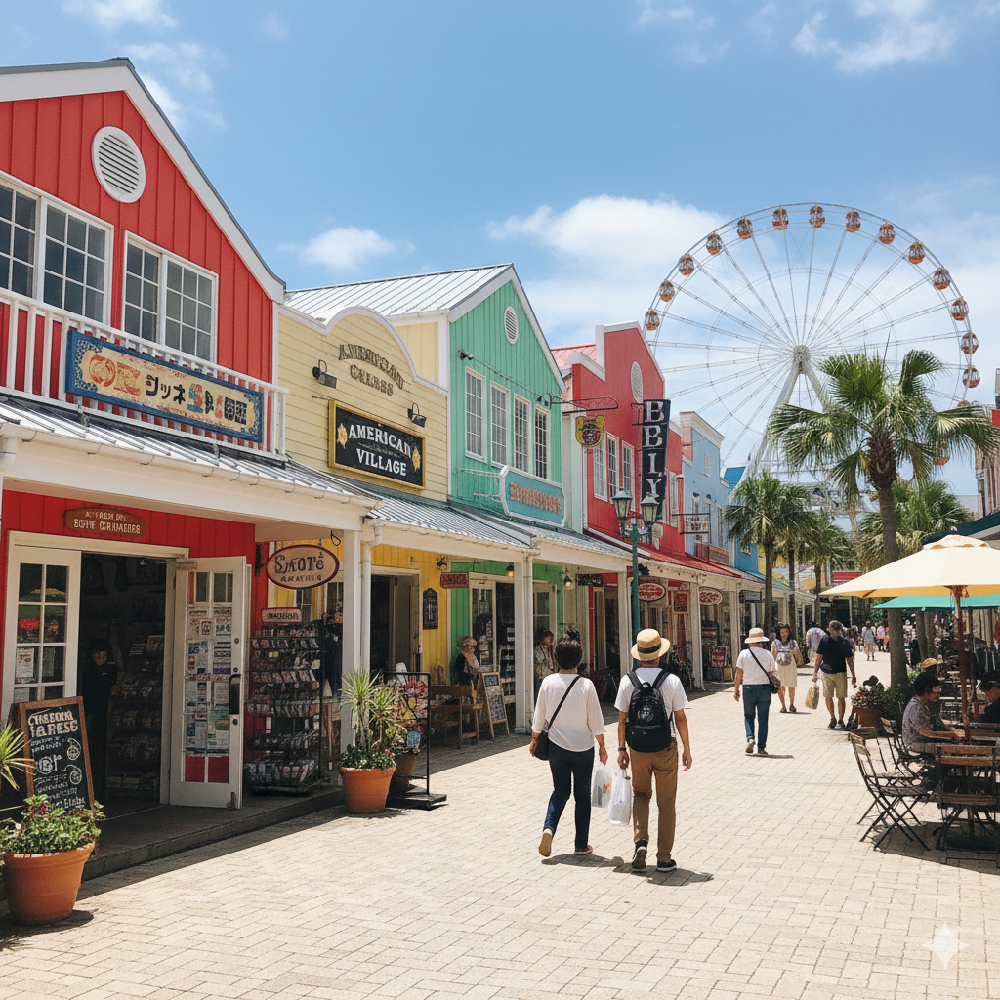
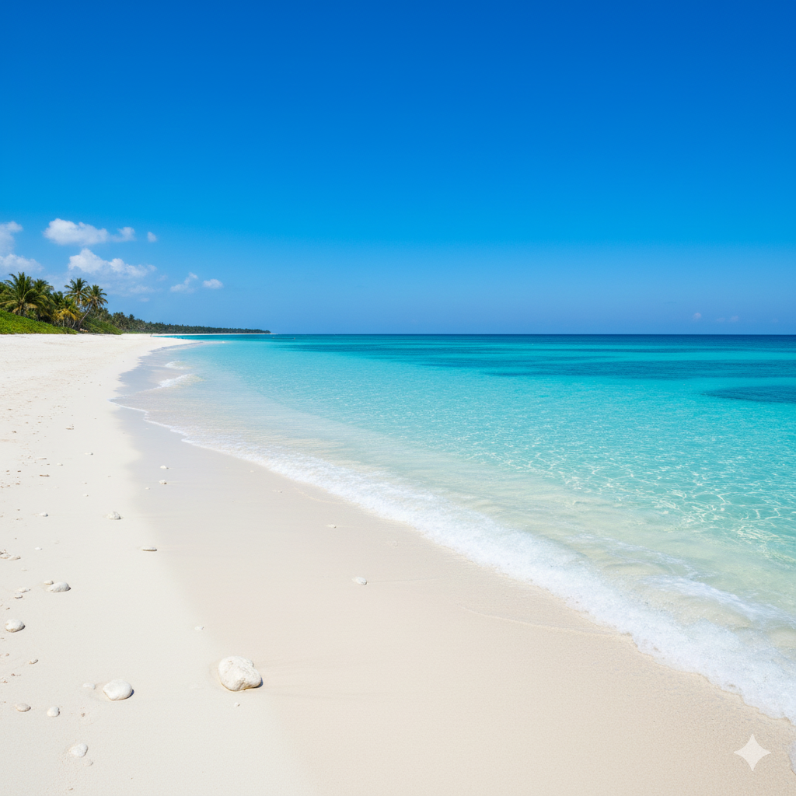
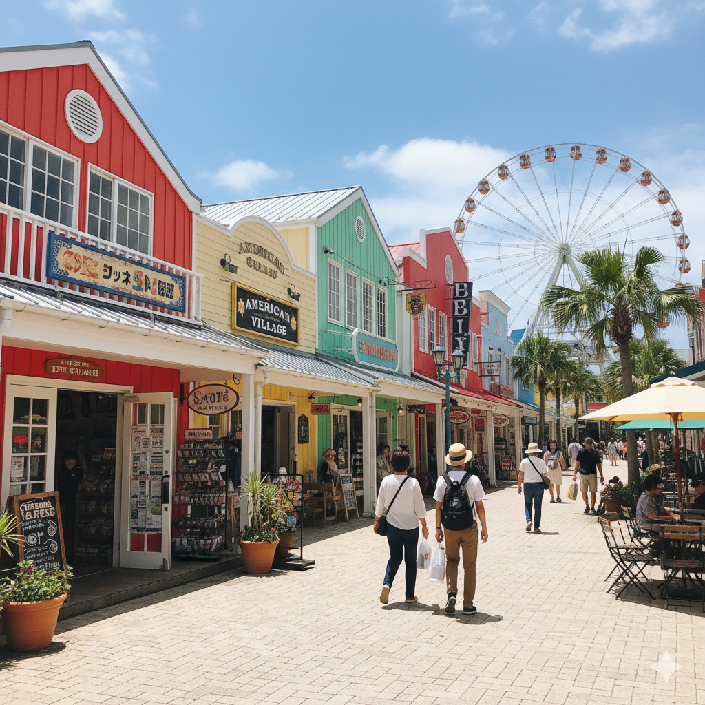
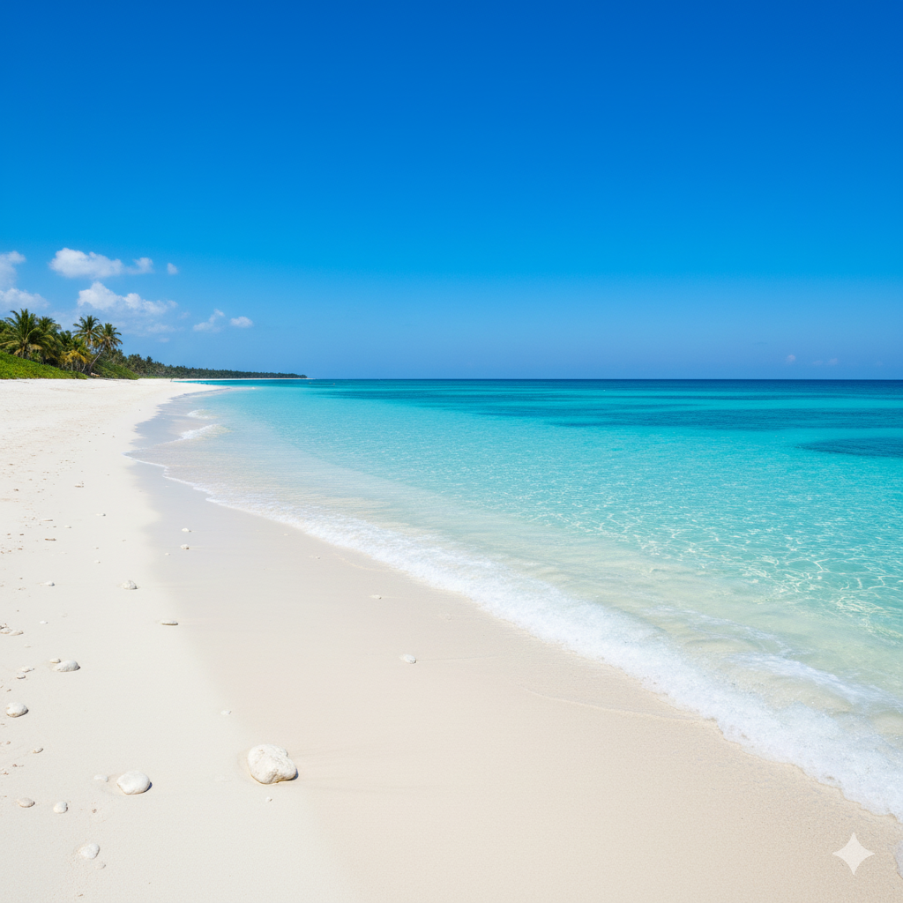

歴史・自然が一気に味わえる沖縄
沖縄は、青い海、白い砂浜、そして豊かな自然が美しい島です。しかし、その魅力はそれだけではありません。沖縄には、長い歴史の中で育まれた独自の文化や、自然との共生によって生まれた豊かな生態系など、多くの魅力が詰まっています。
沖縄特集
沖縄は、青い海、白い砂浜、そして豊かな自然が美しい島です。しかし、その魅力はそれだけではありません。沖縄には、長い歴史の中で育まれた独自の文化や、自然との共生によって生まれた豊かな生態系など、多くの魅力が詰まっています。
沖縄で絶対に行くべきSPOTをご紹介します!

 



数ある名所から4つご紹介!